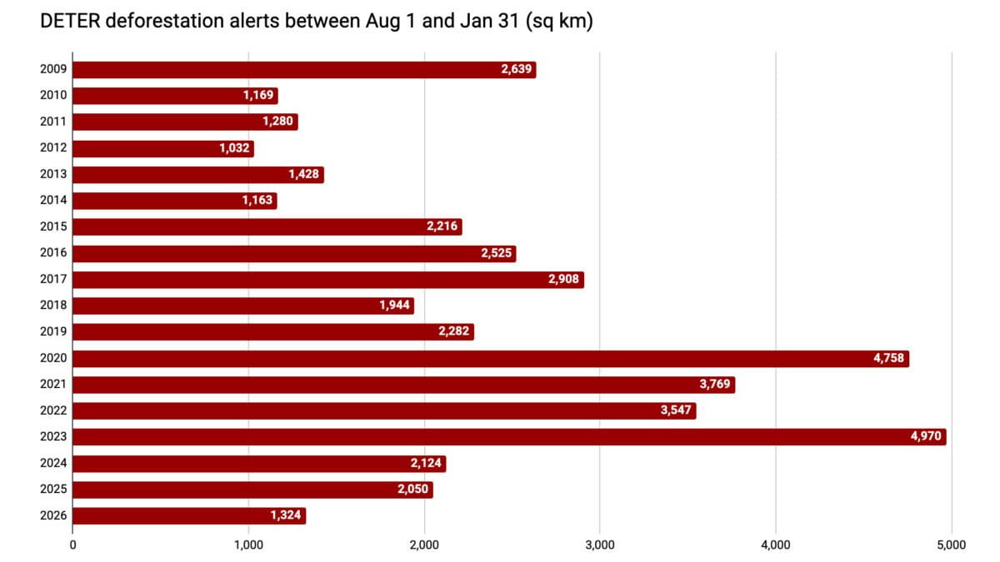

La déforestation en Amazonie : une urgence qui dépasse la forêt
La déforestation en Amazonie ne se résume pas à une disparition progressive d'arbres sur une carte. Elle désorganise un immense équilibre écologique, climatique et humain. Lorsque la forêt recule, ce sont aussi les cycles de pluie, la biodiversité, les sols, les rivières et les conditions de vie de populations entières qui se fragilisent. Pour mesurer la gravité de cette crise, il faut comprendre qu'elle s'inscrit dans une histoire longue, mais qu'elle a désormais atteint une échelle qui en fait l'une des urgences majeures de notre époque.
Aux origines de la destruction : du bois brésilien au bétail
La destruction de la forêt amazonienne n'est pas née d'un seul événement brutal. Elle s'est construite par étapes, au rythme des logiques d'exploitation imposées au territoire. Dès le XVIe siècle, les navigateurs portugais s'intéressent au bois brésilien (Pau-Brasil), recherché en Europe pour la teinture des textiles. Cette première phase annonce déjà une relation extractive à la forêt : on prélève, on transforme, on exporte, sans considérer l'équilibre de l'écosystème.
Au XIXe siècle, l'extension des plantations de caoutchouc, de café et de canne à sucre accentue encore cette transformation. Puis, à la fin du XXe siècle, un tournant décisif s'impose : la progression de l'élevage bovin à grande échelle. À partir de là, la déforestation ne relève plus seulement d'une exploitation ponctuelle, mais d'une conversion durable des terres. La forêt cesse d'être un milieu à préserver et devient, dans une logique productiviste, une surface à conquérir.

Un état des lieux alarmant : le spectre du point de bascule
Le constat dressé par l'Institut des Géosciences de l'Environnement est sans ambiguïté : 17 % de la forêt amazonienne originelle a déjà été déboisée. Ce chiffre, à lui seul, dit l'ampleur du basculement. Mais il faut aller plus loin : la déforestation n'est pas un phénomène diffus et incompréhensible. Ses moteurs sont connus, documentés et profondément liés à des choix économiques et territoriaux.
Dans le détail, l'agriculture intensive représente 40 % de la perte forestière, l'élevage bovin 40 %, l'exploitation forestière commerciale 13 %, tandis que l'activité minière et d'autres infrastructures comptent pour les 7 % restants. Autrement dit, la forêt disparaît moins par accident que sous la pression d'un modèle d'occupation de l'espace qui privilégie le rendement immédiat au détriment du long terme.
« Si un seuil critique de destruction est franchi, la forêt tropicale humide pourrait perdre sa capacité à se maintenir et évoluer vers un biome de type savane. »
C'est là qu'intervient la notion de point de bascule, ou tipping point. L'idée est simple, mais redoutable : au-delà d'un certain seuil, la forêt pourrait ne plus être capable de générer l'humidité nécessaire à sa propre stabilité. Si ce mécanisme s'effondre, le processus de savanisation deviendrait difficile à enrayer, avec des conséquences potentiellement irréversibles à l'échelle régionale.
Comment la science mesure un déséquilibre aussi vaste
Face à un phénomène aussi vaste, la science ne peut pas se contenter d'observer la disparition des arbres depuis le sol ou par satellite. Les chercheurs étudient aussi la manière dont cette perte forestière modifie l'air, l'humidité, les températures et les circulations atmosphériques. Les travaux relayés par l'IGE montrent que l'analyse repose sur plusieurs approches complémentaires :
- Comparer le terrain : les chercheurs mesurent des variables atmosphériques entre des zones encore boisées et des zones récemment défrichées afin d'identifier les changements microclimatiques immédiats.
- Tester des cas simplifiés : ils résolvent les équations du mouvement atmosphérique dans des situations théoriques pour isoler certains mécanismes et mieux comprendre les effets directs de la déforestation.
- Construire des scénarios réalistes : grâce à la modélisation numérique, ils simulent l'impact de la déforestation à différentes échelles, car les perturbations ne sont pas les mêmes selon l'étendue des surfaces touchées.

Des répercussions bien au-delà de la forêt
L'un des apports majeurs de ces recherches est de montrer que les conséquences de la déforestation ne s'arrêtent pas à la lisière des zones abattues. La forêt amazonienne participe activement à la circulation de l'humidité à travers le continent. Lorsqu'elle est fragmentée ou détruite, c'est tout un système atmosphérique qui se dérègle, du niveau local jusqu'à l'échelle continentale.
Concrètement, la perte de couverture forestière dans l'Amazonie brésilienne perturbe le transport de l'humidité vers des régions éloignées. Cette rupture peut réduire les précipitations nocturnes au-dessus de l'est des Andes boliviennes et péruviennes. Une telle baisse des pluies fragilise les vallées andines, les forêts montagnardes humides et les espèces endémiques qui dépendent de ces conditions très spécifiques.
Plus inquiétant encore, cette perturbation du cycle de l'eau peut affecter le bilan de masse des glaciers des Andes tropicales. En modifiant l'humidité de l'air, la déforestation amazonienne agit donc indirectement sur des milieux situés à des milliers de kilomètres. Elle révèle une réalité essentielle : l'écosystème sud-américain forme un ensemble interdépendant, et l'Amazonie en constitue l'un des centres vitaux.
Derrière chaque hectare détruit, ce n'est donc pas seulement un paysage qui disparaît, mais une fonction essentielle du vivant qui s'affaiblit. Parler de déforestation amazonienne, c'est parler d'un enjeu écologique majeur, mais aussi d'un choix de société : continuer à traiter la forêt comme une réserve à exploiter, ou reconnaître enfin qu'elle conditionne une partie de notre avenir commun.